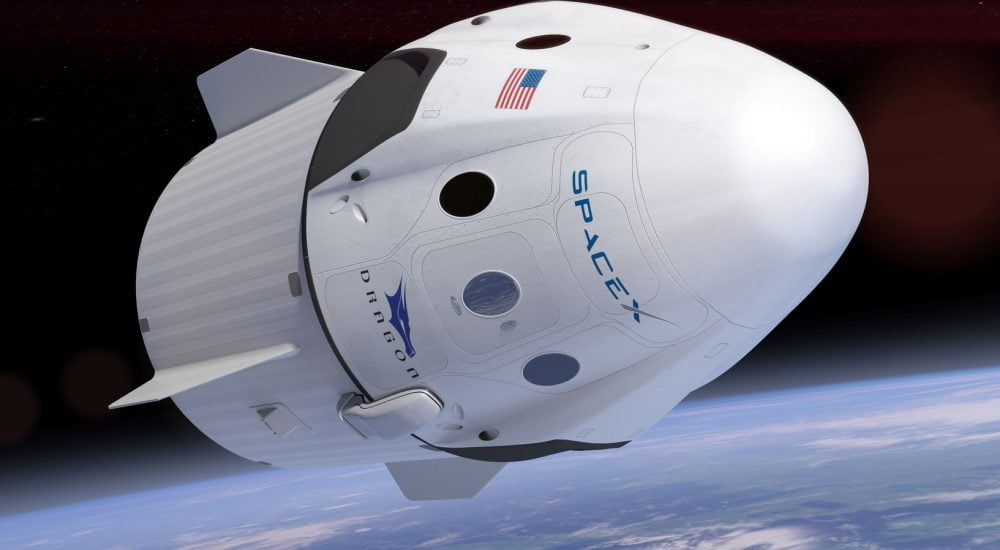
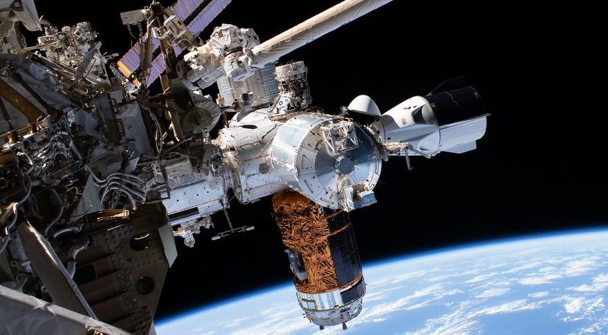

A Dragon részben újra felhasználható amerikai űrhajó, melyet a Space Exploration Technologies (SpaceX) magáncég fejlesztett ki a COTS program keretében. Az első tesztrepülését 2010. december 8-án hajtotta végre. Az űrhajó teher- és személyszállító változatban készül, utóbbi hét személyt képes a Nemzetközi Űrállomásra szállítani. A teherszállító változat első kereskedelmi célú indítására 2012 májusában került sor, ennek során kapcsolódott a Nemzetközi Űrállomáshoz. A személyszállító változat első tesztrepülése 2019. március 2-án történt; a hétszemélyes utastérben élő űrhajósok helyett csak egy szenzorokkal felszerelt életnagyságú bábu utazott. Az első emberes kilövésre 2020. május 30-án került sor. A Falcon 9–Dragon rendszert eleve úgy tervezték, hogy később, továbbfejlesztése után képes legyen űrhajósok szállítására is. Az Augustine-jelentés 2009. végi nyilvánosságra hozatala után világossá vált, hogy a tervezett Orion űrhajó fejlesztési ütemterve nem tartható, emellett a Constellation-tervben a Nemzetközi Űrállomás fenntartására sem maradna pénz, teljes elkészülte után szinte azonnal lehetetlenné válna a használata a Space Shuttle-repülések leállítása miatt. Az áthidaló megoldást egy olcsó, magánfejlesztésű újrafelhasználható személyszállító űrhajó jelentheti, emiatt Barack Obama gazdaságélénkítő csomagjának ráeső egymilliárd dollárjából a NASA 50 millió dollárt különített el egy nem általa fejlesztett személyszállító űrhajó koncepciójának kidolgozására. A CCDev program egyik indulója a SpaceX Dragon űrhajóján alapuló, hét- vagy nyolcfős személyszállító űrhajó.
Crew Dragon
 
| A SpaceX-ről | Falcon 9 |
| Crew Dragon | Starship |
| E-mail feliratkozás | |